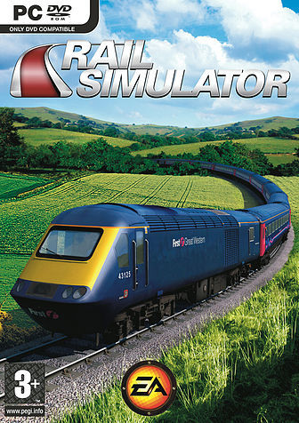

Kuju Rail Simulator’ın hikayesi aslında çok eskilere dayanıyor. 2001 yılında Microsoft Kuju adında bilinmeyen bir programlama ekibinin geliştirdiği Train Simulator’ı piyasaya çıkardığında, pek çok eksiğinin yanı sıra geliştirilebilme yeteneğinin o günün şartlarına göre oldukça iyi olması, kısa zaman içerisinde tren severlerden oluşan tutkulu bir hayran kitlesi oluşmasını sağladı.
MSTS (MicroSoft Train Simulator) için pek çok eklenti yapıldı. Herkes kendi ülkesinin lokomotiflerini, vagonlarını, tren hatlarını, istasyonları oyuna aktarmaya başladı. Zamanla pek çok kişi bu işte ustalaştı, oyunun kapasitesinin çok çok üzerinde eklentiler üretildi.
Microsoft ve Kuju oyundan desteğini çekmiş olsa da günümüzde hala bu oyun için eklentiler üretilmeye devam ediyor. MSTS için modellenen TCDD lokomotif ve vagonları www.railsimturkiye.com adresindeki forumdan ulaşabilirsiniz.
Oyunun geliştiricileri Kuju Entertainment 2007 yılı sonlarında Rail Simulator’ı piyasaya çıkardı. Görsel olarak 2007 yılının getirdiği tüm teknik olanakları kullanan Rail Simulator, içerik olarak MSTS’den çok farklı şeyler sunmuyor. Özellikle ilk piyasaya çıktığı 2007 yılının sonunda pek çok hata içeren, sık sık kilitlenen bir oyun olan Rail Simulator için Şubat 2008’de bir patch yayınlandı. Patch, pek çok açığı yamasa da oyunda daha pek çok bug olduğu unutulmamalı.
Rail Simulator’ın geliştirilebilme seçenekleri MSTS’le yarışabilecek düzeyde. Özellikle RSDevPack (Rail Simulator Developmet Pack) kullanıldığında, çok detaylı tren hatları ve senaryolar oluşturabilmek mümkün. RSDevPack’ı öğrenmek ve kullanmak biraz zor olsada işin pratiğini kaptıktan sonrası kolay…
Oyun bilgisayara yüklendiği haliyle içerik olarak çok zayıf olsada, eklenti paketleri sayesinde uzun yıllar zevkle oynanabilecek bir simülasyon halini alıyor.